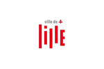

Organisateurs


15 et 16 Octobre 2015 - IAE Lille
« Si le travail fut et demeure rude, si des difficultés renaissent sans cesse, je ressens profondément ma responsabilité de conduire depuis vingt ans « la métamorphose » de Lille. Sans accablement – puisque j’ai pu mener de pair d’autres tâches importantes à la tête de la région Nord-Pas-de-Calais comme président, comme Premier ministre de la France, comme Premier secrétaire du Parti socialiste, mais au contraire, avec une joie qui ne me quittait pas. Elle est celle, très simple, d’être devenu un Lillois parmi les autres, fier comme eux de partager la même terre et le même ciel dans une chaleureuse complicité ». C’est ainsi que Pierre Mauroy s’exprime dans son avant propos à « Parole de Lillois ».
« Quel souvenir de Pierre Mauroy chez les habitants de la métropole lilloise ?
Présentation des résultats analysés d’une étude auprès des habitants de la métropole lilloise sur le souvenir des actions et de la personnalité de Pierre Mauroy.
Pierre Mauroy, l'élu local militant
Le militant socialiste et de l’éducation populaire (son histoire, ses valeurs..), ses mandats locaux (Conseil Général du Nord , Conseil Régional du ...
Entrepreneur politique de la modernité urbaine à l’échelle europolitaine
L’élu local multifacettes et son rôle sur le plan de l’innovation des politiques publiques menées sur les territoires de la ville, de la métropole ...
Anticiper la décentralisation - Pierre Mauroy et l’organisation des pouvoirs locaux
Le visionnaire porteur d’une idée de la décentralisation, des métropoles, des régions, ses réflexions sur la décentralisation au PS avant 1981, son rôle...
Les multiples engagements internationaux de Pierre Mauroy
Le visionnaire local et européen ouvert sur le monde, ses engagements (Président de la fédération mondiale des villes jumelées, président de ...
Patrick Kanner, Ministre de la ville, de la jeunesse et des sports
L'édito de Jerôme Dupuis, les ateliers détaillés et leurs intervenants ...
Consulter le programme

L'inscription au colloque est gratuite